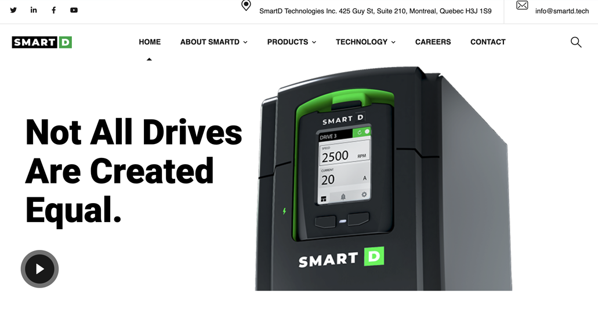
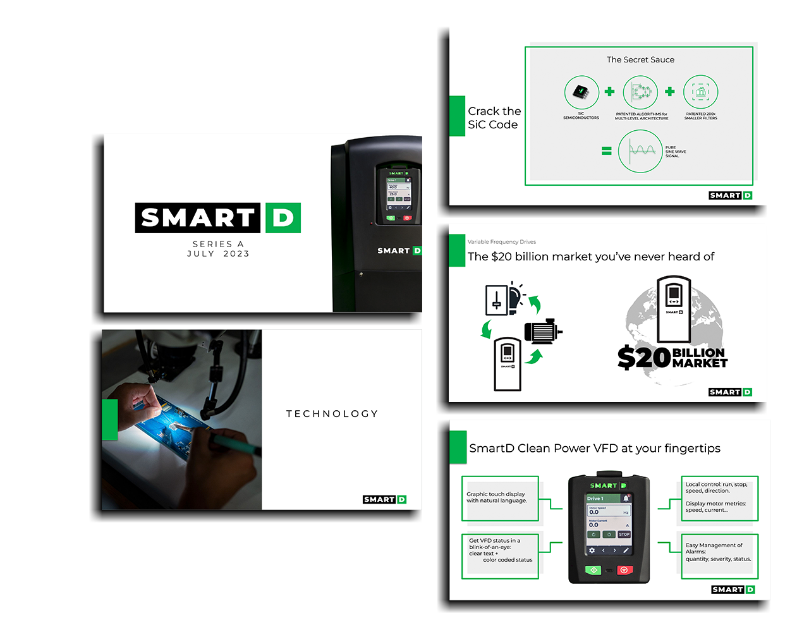
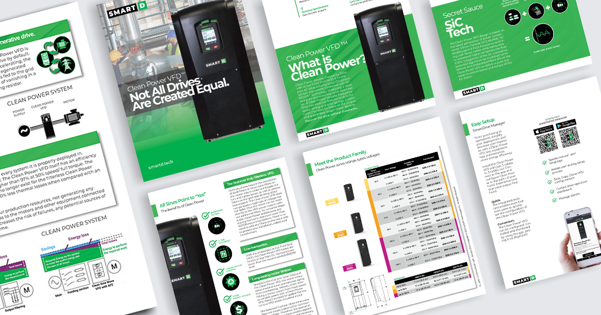
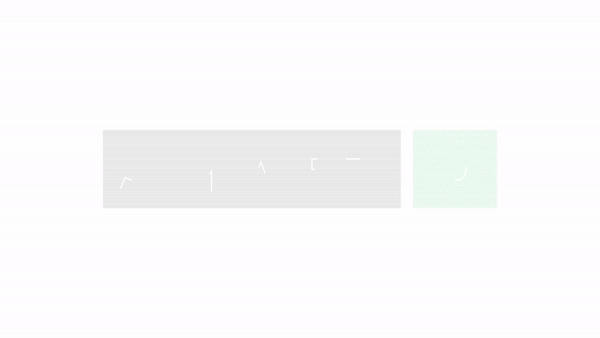
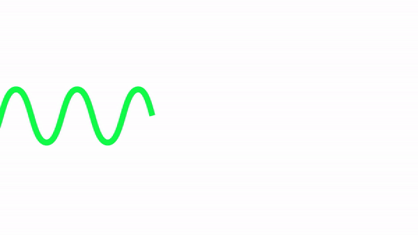

SmartD
Visit smartd.techRole
Web Design, UX / UI, Photography, Graphic Design, Motion Graphics, Video Editing
SmartD Technologies is a Montréal-based power electronics startup focused on developing variable frequency drive products using the latest wide-band gap solid-state technology and SiC transistors, eliminating the drawbacks that ordinary VFDs face.
In order to establish its brand as a strong contender in the world of power electronics, SmartD had to raise consumer awareness about its product, educate its audience on the technology it was offering and improve conversion rates. They wanted to use digital and social media channels in a targeted campaign, and trade show events to further their brand visibility.
My objectives were to create affordable and engaging flyers, banners, booth designs to promote the product at trade shows. To encourage traffic to the website, retain users, increase duration of sessions on the website by driving targeted traffic to the website. Build brand identity and recall by showcasing product launches and key moments in the company’s evolution via visual storytelling that integrated visual design elements in digital and print product catalogs, brochures, sales pitchdecks. Produce branded knowledge building video series to educate potential customers on the benefits of the new technology being offered.
I designed a master slide deck with appropriate brand theme, and font embedded throughout. I refined the master slide deck by including customized infographics, SVG icons, sales charts to reflect the product performance in the market and highlight its potential.
I designed the NAM V2 and NAM V3 product catalogs with a clean aesthetic in mind, using the green and black motif throughout, peppering infographics and icons with schematics in a thoughtful manner that was both dignified and easy on the eyes.
The Youtube series was completed over two days of live shooting the product, 2 days of Voice Over recording, 5 days of editing. I created 5 separate knowledge building videos on how the technology worked, later compiling a Quick Start Guide on how to set up the NAM v3 and the software for clients upon installing the systems.
Conclusion
The print and digital promotional materials echoed the sentiments of the SmartD website branding, from the website, to the trade show booths, to the catalogs and brochures. Updating the UX / UI on the SmartD website resulted in a 98.75% load speed, SEO that placed the company on the first page of Google with a increased web presence of +400%.
Website
Pitchdeck
Catalog
Animated Intro
Animated Outro
